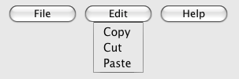
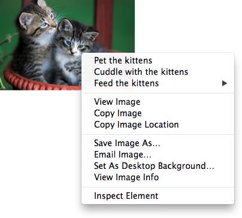

The details element
- Categories:
- Flow content.
- Sectioning root.
- Interactive content.
- Palpable content.
- Contexts in which this element can be used:
- Where flow content is expected.
- Content model:
- One
summary element followed by flow content. - Tag omission in text/html:
- Neither tag is omissible.
- Content attributes:
- Global attributes
open — Whether the details are visible- Allowed ARIA role attribute values:
- Any role that supports
aria-expanded. - Allowed ARIA State and Property Attributes:
- Global aria-* attributes
- Any
aria-* attributes
applicable to the allowed roles. - DOM interface:
-
interface HTMLDetailsElement : HTMLElement {
attribute boolean open;
};
The details element represents a disclosure widget from which the
user can obtain additional information or controls.
The details element is not appropriate for footnotes. Please see the section on footnotes for details on how to mark up footnotes.
The first summary element child of the element, if any,
represents the summary or legend of the details. If there is no
child summary element, the user agent should provide its own legend (e.g.
"Details").
The rest of the element's contents represents the additional information or
controls.
The open content attribute is a boolean
attribute. If present, it indicates that both the summary and the additional information is
to be shown to the user. If the attribute is absent, only the summary is to be shown.
When the element is created, if the attribute is absent, the additional information should be
hidden; if the attribute is present, that information should be shown. Subsequently, if the
attribute is removed, then the information should be hidden; if the attribute is added, the
information should be shown.
The user agent should allow the user to request that the additional information be shown or
hidden. To honor a request for the details to be shown, the user agent must set the open attribute on the element to the value open. To honor a request for the information to be hidden, the user agent must
remove the open attribute from the element.
Whenever the open attribute is added to or removed from
a details element, the user agent must queue a task that runs the
following steps, which are known as the details notification task steps, for this
details element:
-
If another task has been queued to run the details notification task steps for this
details element, then abort these steps.
When the open attribute is toggled
several times in succession, these steps essentially get coalesced so that only one event is
fired.
Fire a simple event named toggle at the
details element.
The task source for this task must be the DOM manipulation task
source.
The open IDL attribute must
reflect the open content attribute.
The following example shows the details element being used to hide technical
details in a progress report.
<section class="progress window">
<h1>Copying "Really Achieving Your Childhood Dreams"</h1>
<details>
<summary>Copying... <progress max="375505392" value="97543282"></progress> 25%</summary>
<dl>
<dt>Transfer rate:</dt> <dd>452KB/s</dd>
<dt>Local filename:</dt> <dd>/home/rpausch/raycd.m4v</dd>
<dt>Remote filename:</dt> <dd>/var/www/lectures/raycd.m4v</dd>
<dt>Duration:</dt> <dd>01:16:27</dd>
<dt>Colour profile:</dt> <dd>SD (6-1-6)</dd>
<dt>Dimensions:</dt> <dd>320×240</dd>
</dl>
</details>
</section>
The following shows how a details element can be used to hide some controls by
default:
<details>
<summary><label for=fn>Name & Extension:</label></summary>
<p><input type=text id=fn name=fn value="Pillar Magazine.pdf">
<p><label><input type=checkbox name=ext checked> Hide extension</label>
</details>
One could use this in conjunction with other details in a list to allow the user
to collapse a set of fields down to a small set of headings, with the ability to open each
one.

In these examples, the summary really just summarises what the controls can change, and not
the actual values, which is less than ideal.
Because the open attribute is added and removed
automatically as the user interacts with the control, it can be used in CSS to style the element
differently based on its state. Here, a stylesheet is used to animate the colour of the summary
when the element is opened or closed:
<style>
details > summary { transition: color 1s; color: black; }
details[open] > summary { color: red; }
</style>
<details>
<summary>Automated Status: Operational</summary>
<p>Velocity: 12m/s</p>
<p>Direction: North</p>
</details>
The element
- :
- .
- If the element's attribute is in the state: .
- :
- Where is expected.
- If the element's attribute is in the state: as the child of a element whose attribute is in the state.
- :
- If the element's attribute is in the state: either zero or more and elements, or, .
- If the element's attribute is in the state: in any order, zero or more elements, zero or more elements, zero or more elements whose attributes are in the state, and zero or more elements.
- :
- Neither tag is omissible.
- :
- — Type of menu
- — User-visible label
- Allowed ARIA role attribute values:
menu
(default - do not set),
directory,
list,
listbox,
menubar,
tablist,
tabpanel
or tree.- Allowed ARIA State and Property Attributes:
- Global aria-* attributes
- Any
aria-* attributes
applicable to the allowed roles. - :
-
interface : {
attribute DOMString ;
attribute DOMString ;
// also has obsolete members
};
The element represents a list of commands.
The attribute is an indicating the kind of menu being declared. The attribute has two states. The
"" keyword maps to the state, in which the element is declaring a context menu
or the menu for a . The "" keyword maps to the toolbar state, in which the element is declaring a toolbar. The attribute may also be
omitted. The is the
state if the parent element is a element whose attribute is in the state; otherwise, it is the state.
If a element's attribute is in the
state, then the element
the commands of a popup menu, and the user can only examine and interact with the commands if that
popup menu is activated through some other element, either via the attribute or the element's attribute.
If a element's attribute is in the
state, then the element a
toolbar consisting of its contents, in the form of either an unordered list of items (represented
by elements), each of which represents a command that the user can perform or
activate, or, if the element has no element children,
describing available commands.
The attribute gives the label of the
menu. It is used by user agents to display nested menus in the UI: a context menu containing
another menu would use the nested menu's attribute for
the submenu's menu label. The attribute must only be
specified on elements whose parent element is a element whose
attribute is in the state.
A is a if it is the
child of a , or if it is the
of a element that is not
, does not have a attribute, and is not
the descendant of an element with a attribute.
A consists of an ordered list of zero or more , which can be any of:
- Commands, which can be marked as default commands ()
- Separators ()
- Other , each with an associated , which allows the list to be nested ()
To build and show a menu for a particular element
source and with a particular element subject as a subject, the user agent
must run the following steps:
Let pop-up menu be the created by the algorithm when passed the source element.
-
Display pop-up menu to the user, and let the algorithm that invoked this one continue.
If the user selects a that corresponds to an element that still represents a command when the user selects it, then the UA must invoke that
command's Action. If the command's Action is defined as , either directly or via the algorithm, then the attribute of that event must be initialised to subject.
Pop-up menus must not, while being shown, reflect changes in the DOM. The menu is constructed
from the DOM before being shown, and is then immutable.
To for an element source, the user agent must run
the following steps, which return a :
Let generated menu be an empty .
-
Run the steps for the element using generated menu
as the output.
The steps for a element using a specific output as
output are as follows: For each child node of the in ,
run the appropriate steps from the following list:
- If the child is a element that defines
a command
- Append the command to output, respecting the command's . If the element has a attribute, mark the command as being a default
command.
- If the child is an element
- Append a to output.
- If the child is a element with no attribute
- Append a to output, then run
the steps for this child element, using
output as the output, then append another to output.
- If the child is a element with a attribute
- Let submenu be the result of running the steps for the child element. Then, append submenu to output, using the value of the child
element's attribute as the .
- Otherwise
- the child node.
Remove from output any whose is the empty string.
Remove from output any representing a command whose Label is
the empty string.
Collapse all sequences of two or more adjacent in output to a single .
If the first in output is a , then remove it.
If the last in output is a , then remove it.
Return output.
The IDL attribute must
the content attribute of the same name, .
The IDL attribute must
the content attribute of the same name.
In this example, the element is used to describe a toolbar with three menu
buttons on it, each of which has a dropdown menu with a series of options:
<menu>
<li>
<button type=menu value="File" menu="filemenu">
<menu id="filemenu" type="popup">
<menuitem onclick="fnew()" label="New...">
<menuitem onclick="fopen()" label="Open...">
<menuitem onclick="fsave()" label="Save">
<menuitem onclick="fsaveas()" label="Save as...">
</menu>
</li>
<li>
<button type=menu value="Edit" menu="editmenu">
<menu id="editmenu" type="popup">
<menuitem onclick="ecopy()" label="Copy">
<menuitem onclick="ecut()" label="Cut">
<menuitem onclick="epaste()" label="Paste">
</menu>
</li>
<li>
<button type=menu value="Help" menu="helpmenu">
<menu id="helpmenu" type="popup">
<menuitem onclick="location='help.html'" label="Help">
<menuitem onclick="location='about.html'" label="About">
</menu>
</li>
</menu>
In a supporting user agent, this might look like this (assuming the user has just activated the
second button):

The menuitem element
- :
- None.
- :
- As a child of a element whose attribute is in the state.
- :
- .
- :
- No .
- :
- — Type of command
- — User-visible label
- — Icon for the command
- — Whether the form control is disabled
- — Whether the command or control is checked
- — Name of group of commands to treat as a radio button group
- — Mark the command as being a default command
command — Command definition- Also, the attribute on this element: Hint describing the command.
- Allowed ARIA role attribute values:
menuitem
(default - do not set).- Allowed ARIA State and Property Attributes:
- Global aria-* attributes
- Any
aria-* attributes
applicable to the allowed roles. - :
-
interface : {
attribute DOMString ;
attribute DOMString ;
attribute DOMString ;
attribute boolean ;
attribute boolean ;
attribute DOMString ;
attribute boolean ;
readonly attribute ? command;
};
The element represents a command that the user can invoke from a popup
menu (either a or the menu of a ).
A element that uses one or more of the
,
,
,
,
, and
attributes defines a new command.
A element that uses the command attribute defines a command by reference to another
one. This allows authors to define a command once, and set its state (e.g. whether it is active or
disabled) in one place, and have all references to that command in the user interface change at
the same time.
If the command attribute is specified, the element
is in the indirect command mode. If it is not specified, it is in the explicit
command mode. When the element is in the indirect command mode, the element
must not have any of the following attributes specified:
,
,
,
,
,
.
The attribute indicates the kind of
command: either a normal command with an associated action, or a state or option that can be
toggled, or a selection of one item from a list of items.
The attribute is an with three keywords and states. The
"command" keyword maps to the
Command state, the "" keyword maps to the state, and the "" keyword maps to the state. The is the Command state.
- The Command state
The element a normal command with an associated action.
- The state
The element a state or option that can be toggled.
- The state
The element a selection of one item from a list of items.
The attribute gives the name of the
command, as shown to the user. The attribute must
be specified if the element is in the explicit command mode. If the attribute is
specified, it must have a value that is not the empty string.
The attribute gives a picture that
represents the command. If the attribute is specified, the attribute's value must contain a
. To obtain
the of the icon when the attribute's value is not the empty string, the
attribute's value must be relative to the element.
When the attribute is absent, or its value is the empty string, or its value fails, there is no icon.
The attribute is a
that, if present, indicates that the command is not available in
the current state.
The distinction between and
is subtle. A command would be disabled if, in the same
context, it could be enabled if only certain aspects of the situation were changed. A command
would be marked as hidden if, in that situation, the command will never be enabled. For example,
in the context menu for a water faucet, the command "open" might be disabled if the faucet is
already open, but the command "eat" would be marked hidden since the faucet could never be
eaten.
The attribute is a that, if present, indicates that the command is selected. The attribute must be
omitted unless the attribute is in either the state or the state.
The attribute gives the
name of the group of commands that will be toggled when the command itself is toggled, for
commands whose attribute has the value "radio". The scope of the name is the child list of the parent element. The
attribute must be omitted unless the attribute is in
the state. When specified, the
attribute's value must be a non-empty string.
If a element slave has a command attribute, and there is an element in
slave's whose has
a value equal to the value of slave's command attribute, and the first such element in , hereafter master, itself defines a
command and either is not a element or does not itself have a command attribute, then the master command of slave is master.
A element with a command
attribute must have a master command.
This effectively defines the syntax of the attribute's value as being the ID of
another element that defines a command.
The attribute gives a hint describing
the command, which might be shown to the user to help him.
The attribute indicates, if
present, that the command is the one that would have been invoked if the user had directly
activated the menu's subject instead of using the menu. The attribute is a .
In this trivial example, a submit button is given a context menu that has two options, one to
reset the form, and one to submit the form. The submit command is marked as being the default.
<form action="dosearch.pl">
<p><label>Enter search terms: <input type="text" name="terms"></label></p>
<p><input type=submit contextmenu=formmenu id="submitbutton"></p>
<p hidden><input type=reset id="resetbutton"></p>
<menu type=popup id=formmenu>
<menuitem command="submitbutton" default>
<menuitem command="resetbutton">
</menu>
</form>
The IDL attribute must
the content attribute of the same name, .
The , , , , and , and IDL attributes must
the respective content attributes of the same name.
The command IDL attribute must return the
master command, if any, or null otherwise.
If the element's Disabled State is false
(enabled) then the element's depends on the element's and command
attributes, as follows:
- If the element has a master command set by its
command attribute The user agent must on the element's
master command.
- If the attribute is in the state
If the element has a attribute, the UA
must remove that attribute. Otherwise, the UA must add a attribute, with the literal value "checked".
- If the attribute is in the state
If the element has a parent, then the UA must walk the list of child nodes of that parent
element, and for each node that is a element, if that element has a attribute whose value exactly matches the
current element's (treating missing
attributes as if they were the empty string), and has a attribute, must remove that attribute.
Then, the element's attribute must be set
to the literal value "checked".
- Otherwise
The element's is to do nothing.
Firing a synthetic event at the element
does not cause any of the actions described above to happen.
If the element's Disabled State is true
(disabled) then the element has no .
The element is not rendered except as .
Here is an example of a pop-up menu button with three options that let the user toggle between
left, center, and right alignment. One could imagine such a toolbar as part of a text editor. The
menu also has a separator followed by another menu item labeled "Publish", though that menu item
is disabled.
<button type=menu menu=editmenu>Commands...</button>
<menu type="popup" id="editmenu">
<menuitem type="radio" radiogroup="alignment" checked="checked"
label="Left" icon="icons/alL.png" onclick="setAlign('left')">
<menuitem type="radio" radiogroup="alignment"
label="Center" icon="icons/alC.png" onclick="setAlign('center')">
<menuitem type="radio" radiogroup="alignment"
label="Right" icon="icons/alR.png" onclick="setAlign('right')">
<hr>
<menuitem type="command" disabled
label="Publish" icon="icons/pub.png" onclick="publish()">
</menu>
Context menus
Declaring a context menu
The attribute gives the element's
context menu. The value must be the of a
element in the same whose
attribute is in the state.
When a user right-clicks on an element with a attribute, the user agent will first fire a event at the element, and then, if that event is not
canceled, a event at the element.
Here is an example of a context menu for an input control:
<form name="npc">
<label>Character name: <input name=char type=text contextmenu=namemenu required></label>
<menu type=popup id=namemenu>
<menuitem label="Pick random name" onclick="document.forms.npc.elements.char.value = getRandomName()">
<menuitem label="Prefill other fields based on name" onclick="prefillFields(document.forms.npc.elements.char.value)">
</menu>
</form>
This adds two items to the control's context menu, one called "Pick random name", and one
called "Prefill other fields based on name". They invoke scripts that are not shown in the
example above.
Processing model
Each element has an , which can be null. If an element A has a attribute, and there is
an element with the ID given by A's attribute's value in A's
home subtree, and the first such element in tree order is a
element whose attribute is in the state, then A's is that element. Otherwise, if A has a parent element,
then A's is the of its parent element. Otherwise, A's is null.
When an element's context menu is requested (e.g. by the user right-clicking the element, or
pressing a context menu key), the user agent must apply the appropriate rules from the following
list:
- If the user requested a context menu using a pointing device
The user agent must fire a trusted event with the name , that bubbles and is cancelable, and that uses the
MouseEvent interface, at the element for which the menu was requested. The context
information of the event must be initialised to the same values as the last
MouseEvent user interaction event that was fired as part of the gesture that was
interpreted as a request for the context menu.
- Otherwise
The user agent must fire a synthetic mouse
event named contextmenu that bubbles and is
cancelable at the element for which the menu was requested.
Typically, therefore, the firing of the event will be the default action of a mouseup or keyup event. The exact
sequence of events is UA-dependent, as it will vary based on platform conventions.
The default action of the event depends on
whether or not the element for which the menu was requested has a non-null when the event dispatch has completed, as follows.
If the of the element for which the menu was requested is
null, the default action must be for the user agent to show its default context menu, if it has
one.
Otherwise, let subject be the element for which the menu was requested, and let
menu be the of target immediately after
the event's dispatch has completed. The user
agent must fire a trusted event with the name show at menu, using the RelatedEvent interface,
with the relatedTarget attribute initialised
to subject. The event must be cancelable.
If this event (the show event) is not canceled, then
the user agent must build and show the menu for
menu with subject as the subject.
The user agent may also provide access to its default context menu, if any, with the context
menu shown. For example, it could merge the menu items from the two menus together, or provide the
page's context menu as a submenu of the default menu. In general, user agents are encouraged to
de-emphasise their own contextual menu items, so as to give the author's context menu the
appearance of legitimacy — to allow documents to feel like "applications" rather than "mere
Web pages".
User agents may provide means for bypassing the context menu processing model, ensuring that
the user can always access the UA's default context menus. For example, the user agent could
handle right-clicks that have the Shift key depressed in such a way that it does not fire the
event and instead always shows the default
context menu.
The IDL attribute must
reflect the content attribute.
In this example, an image of cats is given a context menu with four possible commands:
<img src="cats.jpeg" alt="Cats" contextmenu=catsmenu>
<menu type="popup" id="catsmenu">
<menuitem label="Pet the kittens" onclick="kittens.pet()">
<menuitem label="Cuddle with the kittens" onclick="kittens.cuddle()">
<menu label="Feed the kittens">
<menuitem label="Fish" onclick="kittens.feed(fish)">
<menuitem label="Chicken" onclick="kittens.feed(chicken)">
</menu>
</menu>
When a user of a mouse-operated visual Web browser right-clicks on the image, the browser
might pop up a context menu like this:

When the user clicks the disclosure triangle, such a user agent would expand the context menu
in place, to show the browser's own commands:

[Constructor(DOMString type, optional RelatedEventInit eventInitDict)]
interface RelatedEvent : Event {
readonly attribute EventTarget? relatedTarget;
};
dictionary RelatedEventInit : EventInit {
EventTarget? relatedTarget;
};
- event .
relatedTarget -
Returns the other event target involved in this event. For example, when a show event fires on a element, the other event
target involved in the event would be the element for which the menu is being shown.
The relatedTarget attribute must
return the value it was initialised to. When the object is created, this attribute must be
initialised to null. It represents the other event target that is related to the event.
Commands
Facets
A command is the abstraction behind menu items, buttons, and
links. Once a command is defined, other parts of the interface can refer to the same command,
allowing many access points to a single feature to share facets such as the Disabled State.
Commands are defined to have the following facets:
- Type
- The kind of command: "command", meaning it is a normal command; "radio", meaning that
triggering the command will, amongst other things, set the Checked State to true (and probably uncheck some other
commands); or "checkbox", meaning that triggering the command will, amongst other things, toggle
the value of the Checked State.
- ID
- The name of the command, for referring to the command from the markup or from script. If a
command has no ID, it is an anonymous command.
- Label
- The name of the command as seen by the user.
- Hint
- A helpful or descriptive string that can be shown to the user.
- Icon
- An absolute URL identifying a graphical image that represents the action. A
command might not have an Icon.
- Access Key
- A key combination selected by the user agent that triggers the command. A command might not
have an Access Key.
- Hidden State
- Whether the command is hidden or not (basically, whether it should be shown in menus).
- Disabled State
- Whether the command is relevant and can be triggered or not.
- Checked State
- Whether the command is checked or not.
- Action
- The actual effect that triggering the command will have. This could be a scripted event
handler, a URL to which to navigate, or a form submission.
These facets are exposed on elements using the command API:
- element .
commandType -
Exposes the Type facet of the command.
- element .
id -
Exposes the ID facet of the command.
- element .
commandLabel -
Exposes the Label facet of the command.
- element .
title -
Exposes the Hint facet of the command.
- element .
commandIcon -
Exposes the Icon facet of the command.
- element .
accessKeyLabel -
Exposes the Access Key facet of the command.
- element .
commandHidden -
Exposes the Hidden State facet of the command.
- element .
commandDisabled -
Exposes the Disabled State facet of the command.
- element .
commandChecked -
Exposes the Checked State facet of the command.
- element .
click() -
Triggers the Action of the command.
The commandType attribute must
return a string whose value is either "command", "radio", or "checkbox", depending on whether the Type of the command defined by the element is "command",
"radio", or "checkbox" respectively. If the element does not define a command, it must return
null.
The commandLabel attribute must
return the command's Label, or null if the element does
not define a command or does not specify a Label.
The commandIcon attribute must
return the absolute URL of the command's Icon. If the element does not specify an icon, or if the element
does not define a command, then the attribute must return null.
The commandHidden attribute must
return true if the command's Hidden State is that
the command is hidden, and false if the command is not hidden. If the element does not define a
command, the attribute must return null.
The commandDisabled attribute
must return true if the command's Disabled State
is that the command is disabled, and false if the command is not disabled. This attribute is not
affected by the command's Hidden State. If the
element does not define a command, the attribute must return null.
The commandChecked attribute must
return true if the command's Checked State is that
the command is checked, and false if it is that the command is not checked. If the element does
not define a command, the attribute must return null.
The ID facet is exposed by the id IDL attribute, the Hint
facet is exposed by the title IDL attribute, and the AccessKey facet is exposed by the accessKeyLabel IDL attribute.
- document .
commands -
Returns an HTMLCollection of the elements in the Document that
define commands and have IDs.
The commands attribute of the document's
Document interface must return an HTMLCollection rooted at the
Document node, whose filter matches only elements that define commands and have IDs.
User agents may expose the commands that match the following criteria:
User agents are encouraged to do this especially for commands that have Access Keys, as a way to advertise those keys to the
user.
For example, such commands could be listed in the user agent's menu bar.
Using the a element to define a command
An a element with an href attribute defines a command.
The Type of the command is "command".
The ID of the command is the value of the id attribute of the element, if the attribute is present and not empty.
Otherwise the command is an anonymous command.
The Label of the command is the string given by the
element's textContent IDL attribute.
The Hint of the command is the value of the title attribute of the element. If the attribute is not present, the
Hint is the empty string.
The Icon of the command is the absolute
URL obtained from resolving the value of the src attribute of the first img element descendant of the
element in tree order, relative to that element, if there is such an element and
resolving its attribute is successful. Otherwise, there is no Icon for the command.
The AccessKey of the command is the element's
assigned access key, if any.
The Hidden State of the command is true (hidden)
if the element has a hidden attribute, and false otherwise.
The Disabled State facet of the command is
true if the element or one of its ancestors is inert, and false otherwise.
The Checked State of the command is always
false. (The command is never checked.)
The Action of the command, if the element has a
defined activation behaviour, is to run synthetic click activation steps
on the element. Otherwise, it is just to fire a click
event at the element.
Using the button element to define a command
A button element always defines a
command.
The Type, ID,
Label, Hint,
Icon, Access
Key, Hidden State, Checked State, and Action facets of the command are determined as for a elements (see the previous section).
The Disabled State of the command is true if
the element or one of its ancestors is inert, or if the element's disabled state is set, and false otherwise.
Using the input element to define a command
An input element whose type attribute is in
one of the Submit Button, Reset Button, Image
Button, Button, Radio Button, or Checkbox states defines a
command.
The Type of the command is "radio" if the type attribute is in the Radio
Button state, "checkbox" if the type attribute is in
the Checkbox state, and "command" otherwise.
The ID of the command is the value of the id attribute of the element, if the attribute is present and not empty.
Otherwise the command is an anonymous command.
The Label of the command depends on the Type of the
command:
If the Type is "command", then it is the string given
by the value attribute, if any, and a UA-dependent,
locale-dependent value that the UA uses to label the button itself if the attribute is absent.
Otherwise, the Type is "radio" or "checkbox". If the
element is a labeled control, the textContent of the first
label element in tree order whose labeled control is the
element in question is the Label (in DOM terms, this is
the string given by element.labels[0].textContent). Otherwise,
the value of the value attribute, if present, is the Label. Otherwise, the Label is the empty string.
The Hint of the command is the value of the title attribute of the input element. If the attribute is
not present, the Hint is the empty string.
If the element's type attribute is in the Image Button state, and the element has a src attribute, and that attribute's value can be successfully resolved relative to the element, then the Icon of the command is the absolute URL obtained
from resolving that attribute that way. Otherwise, there is no Icon for the command.
The AccessKey of the command is the element's
assigned access key, if any.
The Hidden State of the command is true (hidden)
if the element has a hidden attribute, and false otherwise.
The Disabled State of the command is true if
the element or one of its ancestors is inert, or if the element's disabled state is set, and false otherwise.
The Checked State of the command is true if the
command is of Type "radio" or "checkbox" and the element
is checked attribute, and false otherwise.
The Action of the command, if the element has a
defined activation behaviour, is to run synthetic click activation steps
on the element. Otherwise, it is just to fire a click
event at the element.
Using the option element to define a command
An option element with an ancestor select element and either no value attribute or a value
attribute that is not the empty string defines a command.
The Type of the command is "radio" if the
option's nearest ancestor select element has no multiple attribute, and "checkbox" if it does.
The ID of the command is the value of the id attribute of the element, if the attribute is present and not empty.
Otherwise the command is an anonymous command.
The Label of the command is the value of the
option element's label attribute, if there is
one, or else the value of option element's textContent IDL attribute,
with leading and trailing whitespace
stripped, and with any sequences of two or more space
characters replaced by a single U+0020 SPACE character.
The Hint of the command is the string given by the
element's title attribute, if any, and the empty string if the
attribute is absent.
There is no Icon for the command.
The AccessKey of the command is the element's
assigned access key, if any.
The Hidden State of the command is true (hidden)
if the element has a hidden attribute, and false otherwise.
The Disabled State of the command is true if
the element is disabled, or if its nearest ancestor
select element is disabled, or if it or one
of its ancestors is inert, and false otherwise.
The Checked State of the command is true
(checked) if the element's selectedness is true,
and false otherwise.
The Action of the command depends on its Type. If the command is of Type "radio" then it must pick the option element. Otherwise, it must toggle the option element.
Using the menuitem element to define a
command
A menuitem element that does not have a command attribute defines a
command.
The Type of the command is "radio" if the
menuitem's type attribute is "radio", "checkbox" if the attribute's value is
"checkbox", and "command" otherwise.
The ID of the command is the value of the id attribute of the element, if the attribute is present and not empty.
Otherwise the command is an anonymous command.
The Label of the command is the value of the element's
label attribute, if there is one, or the empty string if
it doesn't.
The Hint of the command is the string given by the
element's title attribute, if any, and the empty string
if the attribute is absent.
The Icon for the command is the absolute
URL obtained from resolving the value of the element's
icon attribute, relative to the element, if it has such an
attribute and resolving it is successful. Otherwise, there is no Icon for the command.
The AccessKey of the command is the element's
assigned access key, if any.
The Hidden State of the command is true (hidden)
if the element has a hidden attribute, and false otherwise.
The Disabled State of the command is true if
the element or one of its ancestors is inert, or if the element has a disabled attribute, and false otherwise.
The Checked State of the command is true
(checked) if the element has a checked attribute, and
false otherwise.
The Action of the command, if the element has a
defined activation behaviour, is to
run synthetic click activation steps on the element. Otherwise, it is just to
fire a click event at the element.
Using the accesskey
attribute to define a command on other elements
An element that has an assigned access key defines a
command.
If one of the earlier sections that define elements that define
commands define that this element defines a command,
then that section applies to this element, and this section does not. Otherwise, this section
applies to that element.
The Type of the command is "command".
The ID of the command is the value of the id attribute of the element, if the attribute is present and not empty.
Otherwise the command is an anonymous command.
The Label of the command depends on the element. If
the element is a labeled control, the textContent of the first
label element in tree order whose labeled control is the
element in question is the Label (in DOM terms, this is
the string given by element.labels[0].textContent). Otherwise,
the Label is the textContent of the element
itself.
The Hint of the command is the value of the title attribute of the element. If the attribute is not present, the
Hint is the empty string.
There is no Icon for the command.
The AccessKey of the command is the element's
assigned access key.
The Hidden State of the command is true (hidden)
if the element has a hidden attribute, and false otherwise.
The Disabled State of the command is true if
the element or one of its ancestors is inert, and false otherwise.
The Checked State of the command is always
false. (The command is never checked.)
The Action of the command is to run the following
steps:
- Run the focusing steps for the element.
- If the element has a defined activation behaviour, run synthetic click
activation steps on the element.
- Otherwise, if the element does not have a defined activation behaviour,
fire a
click event at the element.
The dialog element
- Categories:
- Flow content.
- Sectioning root.
- Contexts in which this element can be used:
- Where flow content is expected.
- Content model:
- Flow content.
- Tag omission in text/html:
- Neither tag is omissible.
- Content attributes:
- Global attributes
open — Whether the dialog box is showing- Allowed ARIA role attribute values:
dialog
(default - do not set),
alert,
alertdialog,
application,
log,
marquee
or status.- Allowed ARIA State and Property Attributes:
- Global aria-* attributes
- Any
aria-* attributes
applicable to the allowed roles. - DOM interface:
-
interface HTMLDialogElement : HTMLElement {
attribute boolean open;
attribute DOMString returnValue;
void show(optional (MouseEvent or Element) anchor);
void showModal(optional (MouseEvent or Element) anchor);
void close(optional DOMString returnValue);
};
The dialog element represents a part of an application that a user interacts with
to perform a task, for example a dialog box, inspector, or window.
The open attribute is a boolean
attribute. When specified, it indicates that the dialog element is active and
that the user can interact with it.
A dialog element without an open attribute
specified should not be shown to the user. This requirement may be implemented indirectly through
the style layer. For example, user agents that support the suggested
default rendering implement this requirement using the CSS rules described in the rendering section.
The tabindex attribute must not be specified on
dialog elements.
- dialog .
show( [ anchor ] ) -
Displays the dialog element.
The argument, if provided, provides an anchor point to which the element will be fixed.
- dialog .
showModal( [ anchor ] ) -
Displays the dialog element and makes it the top-most modal dialog.
The argument, if provided, provides an anchor point to which the element will be fixed.
This method honors the autofocus attribute.
- dialog .
close( [ result ] ) -
Closes the dialog element.
The argument, if provided, provides a return value.
- dialog .
returnValue [ = result ] -
Returns the dialog's return value.
Can be set, to update the return value.
When the show() method is invoked, the user
agent must run the following steps:
If the element already has an open attribute, then
abort these steps.
Add an open attribute to the dialog
element, whose value is the empty string.
If the show() method was invoked with an argument,
set up the position of the dialog element, using that argument as the
anchor. Otherwise, set the dialog to the normal alignment mode.
Run the dialog focusing steps for the dialog element.
Each Document has a stack of dialog elements known as the
pending dialog stack. When a Document is created, this stack must be
initialised to be empty.
When an element is added to the pending dialog stack, it must also be added to the
top layer layer. When an element is removed from the pending dialog
stack, it must be removed from the top layer. [[!FULLSCREEN]]
When the showModal() method is invoked,
the user agent must run the following steps:
Let subject be the dialog element on which the method was
invoked.
If subject already has an open
attribute, then throw an InvalidStateError exception and abort these steps.
If subject is not in a Document, then throw
an InvalidStateError exception and abort these steps.
Add an open attribute to subject, whose value is the empty string.
If the showModal() method was invoked with an
argument, set up the position of subject, using that argument
as the anchor. Otherwise, set the dialog to the centered alignment
mode.
Let subject's node document be blocked by the modal dialog subject.
Push subject onto subject's
node document's pending dialog stack.
Run the dialog focusing steps for subject.
The dialog focusing steps for a dialog element subject are as follows:
If for some reason subject is not a control group owner
at this point, or if it is inert, abort these steps.
-
Let control be the first non-inert focusable area in
subject's control group whose DOM anchor has an autofocus attribute specified.
If there isn't one, then let control be the first non-inert
focusable area in subject's control group.
If there isn't one of those either, then let control be subject.
Run the focusing steps for control.
If at any time a dialog element is removed from a Document, then if that dialog is in that
Document's pending dialog stack, the following steps must be run:
Let subject be that dialog element and document be the Document from which it is being removed.
Remove subject from document's pending
dialog stack.
If document's pending dialog stack is not empty, then let
document be blocked by the modal
dialog that is at the top of document's pending dialog
stack. Otherwise, let document be no longer blocked by a modal
dialog at all.
When the close() method is invoked, the user
agent must close the dialog that the method was invoked on. If the method was invoked
with an argument, that argument must be used as the return value; otherwise, there is no return
value.
When a dialog element subject is to be closed, optionally with a return value result, the user agent
must run the following steps:
If subject does not have an open
attribute, then abort these steps.
Remove subject's open
attribute.
If the argument result was provided, then set the returnValue attribute to the value of result.
-
If subject is in its Document's pending dialog
stack, then run these substeps:
Remove subject from that pending dialog stack.
If that pending dialog stack is not empty, then let subject's node document be blocked by the modal dialog that is at the top of the pending dialog
stack. Otherwise, let document be no longer blocked by a modal
dialog at all.
Queue a task to fire a simple event named close at subject.
The returnValue IDL attribute, on
getting, must return the last value to which it was set. On setting, it must be set to the new
value. When the element is created, it must be set to the empty string.
Canceling dialogs: When a Document's pending dialog
stack is not empty, user agents may provide a user interface that, upon activation, queues a task to fire a simple event named cancel that is cancelable at the top dialog element on
the Document's pending dialog stack. The default action of this event
must be to check if that element has an open attribute, and
if it does, close the dialog with no return value.
An example of such a UI mechanism would be the user pressing the "Escape" key.
All dialog elements are always in one of three modes: normal alignment,
centered alignment, and magic alignment. When a dialog element
is created, it must be placed in the normal alignment mode. In this mode, normal CSS
requirements apply to the element. The centered alignment mode is only used for
dialog elements that are in the top layer. [[!FULLSCREEN]] [[!CSS]]
When an element subject is placed in centered alignment mode,
and when it is in that mode and has new rendering boxes created, the user agent must set up the
element such that its top static position, for the purposes of calculating the used value of the
'top' property, is the value that would place the element's top margin edge as far from the top of
the viewport as the element's bottom margin edge from the bottom of the viewport, if the element's
height is less than the height of the viewport, and otherwise is the value that would place the
element's top margin edge at the top of the viewport.
If there is a dialog element with centered alignment and that is
being rendered when its browsing context changes viewport width (as
measured in CSS pixels), then the user agent must recreate the element's boxes, recalculating its
top static position as in the previous paragraph.
This top static position of a dialog element with centered alignment
must remain the element's top static position until its boxes are recreated. (The element's static
position is only used in calculating the used value of the 'top' property in certain situations;
it's not used, for instance, to position the element if its 'position' property is set to
'static'.)
When a user agent is to set up the position of an element subject using an anchor anchor, it must run the following
steps:
-
If anchor is a MouseEvent object, then run these
substeps:
If anchor's target element does not have a rendered box, or is in a
different document than subject, then let subject be
in the centered alignment mode, and abort the set up the position
steps.
Let anchor element be an anonymous element rendered as a box with
zero height and width (so its margin and border boxes both just form a point), positioned so
that its top and left are at the coordinate identified by the event, and whose properties all
compute to their initial values.
Otherwise, let anchor element be anchor.
Put subject in the magic alignment mode, aligned to anchor element.
While an element A has magic alignment, aligned to an element
B, the following requirements apply:
-
If at any time either A or B cease having rendered
boxes, A and B cease being in the same
Document, or B ceases being earlier than A in tree order, then, if subject is in the
pending dialog stack, let subject's mode become centered
alignment, otherwise, let subject's mode become normal
alignment.
-
A's 'position' property must compute to the keyword 'absolute-anchored' rather than whatever it would
otherwise compute to (i.e. the 'position' property's specified value is ignored).
The 'absolute-anchored'
keyword's requirements are described below.
-
The anchor points for A and B are defined as per the
appropriate entry in the following list:
- If the computed value of 'anchor-point' is 'none' on both A and B
-
The anchor points of A and B are the center points
of their respective first boxes' border boxes.
- If the computed value of 'anchor-point' is 'none' on A and a specific
point on B
-
The anchor point of B is the point given by its 'anchor-point'
property.
If the anchor point of B is the center point of B's
first box's border box, then A's anchor point is the center point of its
first box's margin box.
Otherwise, A's anchor point is on one of its margin edges. Consider
four hypothetical half-infinite lines L1, L2, L3, and L4 that each start in the center of B's first box's border box, and that extend respectively through the top left
corner, top right corner, bottom right corner, and bottom left corner of B's first box's border box. A's anchor point is determined
by the location of B's anchor point relative to these four hypothetical
lines, as follows:
If the anchor point of B lies on L1 or L2, or inside the area bounded
by L1 and L2 that also contains the points above B's first box's border
box, then let A's anchor point be the horizontal center of A's bottom margin edge.
Otherwise, if the anchor point of B lies on L3 or L4, or inside the
area bounded by L4 and L4 that also contains the points below B's first
box's border box, then let A's anchor point be the horizontal center of
A's top margin edge.
Otherwise, if the anchor point of B lies inside the area bounded by L4
and L1 that also contains the points to the left of B's first box's border
box, then let A's anchor point be the vertical center of A's right margin edge.
Otherwise, the anchor point of B lies inside the area bounded by L2 and
L3 that also contains the points to the right of B's first box's border
box; let A's anchor point be the vertical center of A's left margin edge.
- If the computed value of 'anchor-point' is a specific point on A and
'none' on B
-
The anchor point of A is the point given by its 'anchor-point'
property.
If the anchor point of A is the center point of A's
first box's margin box, then B's anchor point is the center point of its
first box's border box.
Otherwise, B's anchor point is on one of its border edges. Consider
four hypothetical half-infinite lines L1, L2, L3, and L4 that each start in the center of A's first box's margin box, and that extend respectively through the top left
corner, top right corner, bottom right corner, and bottom left corner of A's first box's margin box. B's anchor point is determined
by the location of A's anchor point relative to these four hypothetical
lines, as follows:
If the anchor point of A lies on L1 or L2, or inside the area bounded
by L1 and L2 that also contains the points above A's first box's margin
box, then let B's anchor point be the horizontal center of B's bottom border edge.
Otherwise, if the anchor point of A lies on L3 or L4, or inside the
area bounded by L4 and L4 that also contains the points below A's first
box's margin box, then let B's anchor point be the horizontal center of
B's top border edge.
Otherwise, if the anchor point of A lies inside the area bounded by L4
and L1 that also contains the points to the left of A's first box's margin
box, then let B's anchor point be the vertical center of B's right border edge.
Otherwise, the anchor point of A lies inside the area bounded by L2 and
L3 that also contains the points to the right of A's first box's margin
box; let B's anchor point be the vertical center of B's left border edge.
- If the computed value of 'anchor-point' is a specific point on both A
and B
-
The anchor points of A and B are the points given
by their respective 'anchor-point' properties.
The rules above generally use A's margin box, but
B's border box. This is because while A always
has a margin box, and using the margin box allows for the dialog to be positioned offset from
the box it is annotating, B sometimes does not have a margin box (e.g. if it
is a table-cell), or has a margin box whose position may be not entirely clear (e.g. in the face
of margin collapsing and 'clear' handling of in-flow blocks).
In cases where B does not have a border box but its border box is used by
the algorithm above, user agents must use its first box's content area instead. (This is in
particular an issue with boxes in tables that have 'border-collapse' set to 'collapse'.)
-
When an element's 'position' property computes to 'absolute-anchored', the 'float' property does not
apply and must compute to 'none', the 'display' property must compute to a value as described by
the table in the section of CSS
2.1 describing the relationships between 'display', 'position', and 'float',
and the element's box must be positioned using the rules for absolute positioning but with its
static position set such that if the box is positioned in its static position, its anchor point
is exactly aligned over the anchor point of the element to which it is magically aligned. Elements aligned in this way are absolutely
positioned. For the purposes of determining the containing block of other elements, the
'absolute-anchored' keyword must be treated
like the 'absolute' keyword.
The trivial example of an element that does not have a rendered box is one whose
'display' property computes to 'none'. However, there are many other cases; e.g. table columns do
not have boxes (their properties merely affect other boxes).
If an element to which another element is anchored changes rendering, the anchored
element will be be repositioned accordingly. (In other words, the requirements above are live,
they are not just calculated once per anchored element.)
The 'absolute-anchored'
keyword is not a keyword that can be specified in CSS; the 'position' property can only compute to
this value if the dialog element is positioned via the APIs described above.
User agents in visual interactive media should allow the user to pan the viewport to access all
parts of a dialog element's border box, even if the element is larger than the
viewport and the viewport would otherwise not have a scroll mechanism (e.g. because the viewport's
'overflow' property is set to 'hidden').
The open IDL attribute must
reflect the open content attribute.
This dialog box has some small print. The main element is used to draw the user's
attention to the more important parts.
<dialog>
<h1>Add to Wallet</h1>
<main>
<p>How many gold coins do you want to add to your wallet?</p>
<p><input name=amt type=number min=0 step=0.01 value=100></p>
</main>
<p><small>You add coins at your own risk.</small></p>
<p><label><input name=round type=checkbox> Only add perfectly round coins </label>
<p><input type=button onclick="submit()" value="Add Coins"></p>
</dialog>
Anchor points
This section will eventually be moved to a CSS specification; it is specified
here only on an interim basis until an editor can be found to own this.
'anchor-point'| Value:
| none | <position>
|
|---|
| Initial:
| none
|
|---|
| Applies to:
| all elements
|
|---|
| Inherited:
| no
|
|---|
| Percentages:
| refer to width or height of box; see prose
|
|---|
| Media:
| visual
|
|---|
| Computed value:
| The specified value, but with any lengths replaced by their corresponding absolute length
|
|---|
| Animatable:
| no
|
|---|
| Canonical order:
| per grammar
|
|---|
The 'anchor-point' property specifies a point to which dialog boxes are to be aligned.
If the value is a <position>, the anchor point is the point given by the value, which
must be interpreted relative to the element's first rendered box's margin box. Percentages must be
calculated relative to the element's first rendered box's margin box (specifically, its width for
the horizontal position and its height for the vertical position). [[!CSSVALUES]] [[!CSS]]
If the value is the keyword 'none', then no explicit anchor point is defined. The user agent
will pick an anchor point automatically if necessary (as described in the definition of the
open() method above).